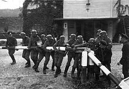
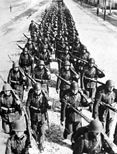
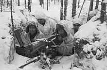

On 1 September 1939, Germany invaded Poland after having staged several false flag border incidents as a pretext to initiate the attack. The Battle of Westerplatte is often described as the first battle of the war. The United Kingdom responded with an ultimatum to Germany to cease military operations, and on 3 September, after the ultimatum was ignored, France, the United Kingdom, Australia, and New Zealand declared war on Germany. This alliance was joined by South Africa (6 September) and Canada (10 September). The alliance provided no direct military support to Poland, outside of a cautious French probe into the Saarland. The Western Allies also began a naval blockade of Germany, which aimed to damage the country's economy and war effort. Germany responded by ordering U-boat warfare against Allied merchant and warships, which would later escalate into the Battle of the Atlantic.
On 8 September, German troops reached the suburbs of Warsaw. The Polish counter offensive to the west halted the German advance for several days, but it was outflanked and encircled by the Wehrmacht. Remnants of the Polish army broke through to besieged Warsaw. On 17 September 1939, after signing a cease-fire with Japan, the Soviets invaded Eastern Poland under a pretext that the Polish state had ostensibly ceased to exist. On 27 September, the Warsaw garrison surrendered to the Germans, and the last large operational unit of the Polish Army surrendered on 6 October. Despite the military defeat, the Polish government never surrendered. A significant part of Polish military personnel evacuated to Romania and the Baltic countries; many of them would fight against the Axis in other theatres of the war. The Polish government in exile also established an Underground State and a resistance movement; in particular the Polish partisan Home Army would grow to become one of the war's largest resistance movements.
The Soviet Union forced the Baltic countries—Estonia, Latvia and Lithuania, the states that were in the Soviet "sphere of influence" under the Molotov-Ribbentrop pact—to sign "mutual assistance pacts" that stipulated stationing Soviet troops in these countries. Soon after, significant Soviet military contingents were moved there. Finland refused to sign a similar pact and rejected ceding part of its territory to the Soviet Union. The Soviet Union invaded Finland in November 1939, and the Soviet Union was expelled from the League of Nations. Despite overwhelming numerical superiority, Soviet military success was modest, and the Finno-Soviet war ended in March 1940 with minimal Finnish concessions. In June 1940, the Soviet Union forcibly annexed Estonia, Latvia and Lithuania, and the disputed Romanian regions of Bessarabia, Northern Bukovina and Hertza. Meanwhile, Nazi-Soviet political rapprochement and economic co-operation gradually stalled, and both states began preparations for war.
